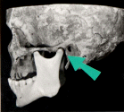
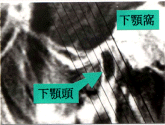
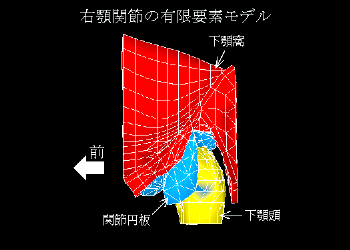
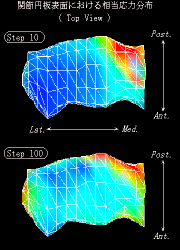

田中研究室（生体・機械システム）
生体系の巧みさを理解し，
機械系を設計・計画する．
【研究テーマ】●運動機能評価と義肢装具の機能設計
●生体適応現象の計算力学モデルとシミュレーション
●生体における構造システムの力学特性評価
●適応構造システムの機構設計と運動解析・計画
●構造物の設計における最適化，知能化，適応化
●ヒトの設計活動を支援するアシスタントシステム
生体システムと機械システム
|
|
|
骨構造の合目的性：
骨は緻密な皮質骨と空隙を多く含む海綿骨とから構成され，皮質骨は骨の外側に，海綿骨は皮質骨の内側にある．海綿骨は骨梁と呼ばれる小さな梁状の要素で構成されており，それらはほぼ直交する曲線パターンを示している．このパターンは，骨構造における荷重の主たる伝達の方向を示す主応力線と非常に類似している．このことから，骨の構造は力学的な合目的性を持っており，それは最小の材料で最大の強度を達成するような最適な設計が実現されているとの説が提出されている．このような目的に適った構造形態を形成し，維持するメカニズムの解明とその工学設計への応用は，生体工学と設計工学の双方にとって興味深いテーマである．
システムモデリング
|
|
|
|
  |
 |  |
顎関節システムの個人別の力学モデルとシミュレーション：
顎関節は，上顎骨と下顎骨の間に位置し（左上図），会話や食事といったごく基本的な生活の中で，ほとんど休みなく働く重要な関節の一つである．顎関節の障害は，関節構成要素，特に軟組織である関節円板のバイオメカニカルな変性と密接に関連しているが，関節内部の力学状態を非侵襲に計測することはほとんど不可能である．非侵襲な磁気共鳴描画（ＭＲＩ）による関節の構造形態観察（左下図）から，顎関節システムの具体的な力学モデル（中図）を構築するならば，コンピュテーショナルバイオメカニクス・シミュレーションにより，関節運動の各ステップにおける関節円板の力学状態の変化の様子をうかがい知ることが可能となる（右図）．このようなアプローチでは，各個人毎のシステムモデルに基づいて，顎関節内部の状態を具体的に調べることが可能となるため，機能障害の詳細な解析や，診断支援への展開が期待されている．
シミュレーション
|
|
|
最適構造設計：
生体の骨が力学的に適合した構造を持つことは先に述べた．人工的な構造物の設計でも，目的に適合した良い設計にしたいと考えるのは，自然なことであろう．より良い設計を追求すると，最も良い設計（最適設計）の探求へといたる．限られた材料を効率よく配置することで，最も変形しにくい剛性の高い構造設計を考えると，例えば左上図のように材料の分布を最適化すれば，左下図に示すように応力状態と適合した構造が得られる．また，細長い柱構造の端に推力のような接線方向力が作用する場合，荷重が大きくなると振動が発散する動的不安定現象が生じるが，断面形状の最適化を行うと，体積，重量は同じでも，安定限界が改善でき，より大きな荷重に対しても振動が減衰する安定な構造となる（右図）．
最適・適応システム
|
|
|
適応トラスの構造形態の設計と動作のプランニング：
骨組み構造であるトラスは，少ない材料で大きな荷重を支えることのできる優れた構造物の一つであり，大規模宇宙構造物ではこのトラス構造が主要な部分を作ることになる．宇宙のような極限環境では，地上の構造物のように適宜，ヒトがその機能を維持，強化，回復させるような対処をすることが容易でないことから，このような構造物には必要に応じて自らの構造や機能を変化させる適応性が要求されている．構造物の形態はその設計時に考慮された状況に対してはもちろん適合するように決定され，構築されるわけであるが，長期にわたる運用の過程では，構造物が果たすべき役割も変化することになる．適応トラスの概念は，このような構造機能変化の要請に対して，適応的に構造形態を可変とすることができるようなものを指している．形態変化をより積極的に活用するならば，クラシカルな意味での構造物であるだけでなく，スペースクレーンやマニピュレータとしての役割も果たすことができる．このような場合には，構造物の設計と運用のプランニングにも最適性とともに適応性が必要になる．
《研究スタッフ》
教 授／田中 正夫
助 手／東藤 正浩
技 官／志茂大治郎